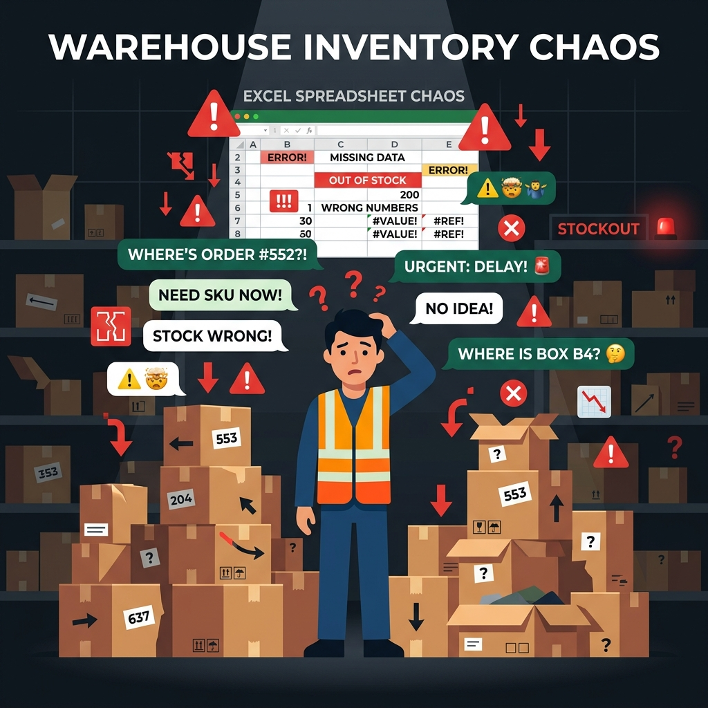

Expediente de proyecto TI para Restock Perú, empresa de zapatillas urbanas de colección con tienda física en Lima y ventas digitales. El estudio identifica por qué el inventario físico no coincide con el registro, por qué los faltantes se descubren tarde y cómo esto afecta las ventas online y la seguridad de una mercadería de alto valor.
Pérdida de trazabilidad y visibilidad en tiempo real del inventario físico, con alta vulnerabilidad ante mermas y riesgos de seguridad en el almacén de Restock Perú. Se origina en un control manual y descentralizado del inventario en hojas de cálculo y en una custodia de la mercadería que no deja registro de quién entra, qué sale ni cuándo.
Fotografías levantadas en campo · Setiembre de 2026
Imágenes que muestran el punto de partida: stock en hojas de cálculo, mercadería de alto valor sin registro de accesos y coordinación suelta por WhatsApp.
Estructura del expediente
Quiénes somos, cómo vende Restock, qué problema se observa y qué valor está en riesgo.
→Entrevistas y cuestionarios a todo el personal, evidencias fotográficas y diagnóstico de la situación actual.
→Quién decide, quién opera y quién depende del inventario dentro de la empresa: poder, interés, actitud y responsabilidades.
→De dónde nacen los descuadres y las mermas, con la evidencia de las entrevistas y del cuestionario.
→Del problema a la solución: objetivos, acciones y la alternativa que se ejecutará.
→Cuatro voces de la operación
Lo que dijo cada perfil en su entrevista, lo que marcó en la escala Likert y cómo confirma el diagnóstico.
Gerente General · Contador / Administrador
Jefe de Almacén · Auxiliar de almacén
Jefe de Ventas · 2 vendedores
Especialista en Marketing y e-commerce
Contexto del negocio · PMBOK 7: Entrega y valor
Quiénes somos, cómo vende Restock, qué problema se observa y qué valor está en riesgo.
La empresa opera con la razón social Restock E.I.R.L. y el nombre comercial Restock Perú. Es una empresa peruana dedicada a la venta minorista de zapatillas urbanas de colección (sneakers de alta gama), ropa streetwear y accesorios. Trabaja con un modelo híbrido: una tienda física en Lima y ventas digitales por Instagram, WhatsApp y su página web.
Sus productos tienen alta demanda, precios elevados y lanzamientos en ediciones limitadas, por lo que el stock no admite errores: cada par se identifica por marca, modelo exacto, color y talla. En el último conteo (agosto de 2026) el inventario registrado era de 300 pares y unas 100 prendas y accesorios, con un precio promedio de S/ 700 por par.
Existe un descuadre constante entre lo que dicen las hojas de cálculo y lo que realmente hay en los anaqueles. En el último conteo completo se hallaron 475 de los 500 pares registrados (5% de diferencia). No se detecta a tiempo si faltan pares, si sobran productos por mal conteo, si una caja quedó mal ubicada o si hubo movimientos no autorizados de mercadería cara.
La ubicación y la identificación de cada par dependen de la memoria y la vista del personal; los accesos al almacén y los movimientos de mercadería no dejan registro; el inventario se concilia a mano en hojas de cálculo separadas de la custodia física; y el personal no recibió formación ni procedimientos escritos de control de inventarios.
Desfases continuos entre stock físico y registro contable; detección tardía o nula de mermas y sustracciones internas; pérdidas por cancelaciones de compras online sin stock real; y descubrimiento tardío de ingresos no programados o incidentes.
Zapatillas urbanas de alta gama y ediciones limitadas de Nike, Jordan, Adidas y OFF-WHITE. Identificadas por marca, modelo, color y talla.
Prendas urbanas de marcas de colección.
Gorras, medias, cordones y otros complementos del rubro streetwear.
Entorno y evidencias · PMBOK 7: Adaptar y Navegar
Entorno de la empresa, entrevistas y cuestionarios a todo el personal, evidencias fotográficas y diagnóstico de la situación actual.
Entrevistas del 14 al 26 de setiembre de 2026. Cuestionarios impresos del 28 de setiembre al 2 de octubre de 2026.
Consulta el instrumento aplicado para realizar las entrevistas al personal.
Abrir instrumento de entrevista (Word)Semi-estructurada, presencial, en la oficina de dirección, con audio. 12 preguntas en 8 dimensiones.
Semi-estructurada, en el almacén, con audio. 9 preguntas.
Semi-estructurada, en la tienda, con audio. 7 preguntas.
Semi-estructurada, en la oficina, con audio. 6 preguntas.
Cada persona marcó su nivel de acuerdo en una escala de 1 (totalmente en desacuerdo) a 5 (totalmente de acuerdo). Un puntaje alto significa que el problema está presente. De 1,00 a 2,33 es nivel bajo · De 2,34 a 3,66 medio · De 3,67 a 5,00 alto.
Stakeholders · PMBOK 7: Involucrarse eficazmente con los interesados
Quién decide, quién opera y quién depende del inventario dentro de la empresa: poder, interés, actitud y responsabilidades actuales.
Dirección
Decide compras, reposición y seguridad; responde por las pérdidas.
Inventario y operaciones
Recibe, ubica y cuenta la mercadería; guarda una de las llaves.
Ventas y atención al cliente
Confirma stock en tienda y actualiza el Excel; guarda una de las llaves.
Administrativa y financiera
Concilia el inventario con la contabilidad; guarda una de las llaves.
Marketing y e-commerce
Publica el stock en la web e Instagram y lanza campañas.
Ventas y atención al cliente
Ofrece pares al cliente y confirma disponibilidad por WhatsApp.
Inventario y operaciones
Busca, acomoda y anota los movimientos físicos.
— Ninguno —
— Ninguno —
Árbol de problemas · PMBOK 7: Reconocer y evaluar interacciones del sistema
De dónde nacen los descuadres y las mermas, con la evidencia de las entrevistas y del cuestionario.

Pérdida de trazabilidad y visibilidad en tiempo real del inventario físico, con alta vulnerabilidad ante mermas y accesos no registrados en el almacén de Restock.
La empresa no puede crecer ni ampliar sus canales sin aumentar sus pérdidas. (≈ S/ 40,000 al año)
Por mermas de mercadería de alto valor, sustracciones y ventas online canceladas.
En web e Instagram por pedidos cancelados.
Desfases continuos entre el stock físico y el registro contable. (59 de 920 pares con diferencia en el último conteo)
Detección tardía o nula de mermas y sustracciones internas. (4 pares de edición limitada en 2 casos en 12 meses)
Cancelaciones de compras online por falta de stock real. (9 a 12 pedidos al mes)
Las causas con mayor respaldo están en la seguridad y custodia (Likert 4,38 y 4,50) y en el registro manual del inventario (4,12 en tres perfiles).
Como la ubicación no se registra (causa 1) y los movimientos no dejan rastro (causa 2), el Excel (causa 3) difiere de la realidad; al no existir procedimientos (causa 4), cada persona lo corrige a su manera y la diferencia se amplía.
Las ventas online canceladas y los pares sin explicar suman unos S/ 40,000 al año según la gerencia y son lo que más afecta la rentabilidad.
Objetivos y alternativas · PMBOK 7: Enfocarse en el valor · Adaptar según el contexto
Del problema a la solución: árbol de objetivos, acciones por medio fundamental y la evaluación que define el proyecto a ejecutar.
El árbol de objetivos convierte cada elemento del árbol de problemas en su situación deseada. Las cuatro causas directas pasan a ser medios de primer nivel y sus causas indirectas, medios fundamentales; el problema central se convierte en el objetivo central; y los efectos, en los fines.
"Recuperar el control, la trazabilidad y la visibilidad en tiempo real del inventario físico y de los accesos al almacén de Restock E.I.R.L., incrementando la exactitud del stock del 93.6% al 99% y reduciendo los pedidos online cancelados por falta de producto de 9-12 a menos de 1 al mes, mediante la automatización del registro de movimientos y la estandarización de los procedimientos operativos en un plazo de 6 meses."
Rentabilidad y capacidad de crecimiento protegidas
Pérdidas por mermas y cancelaciones reducidas al mínimo
Clientes satisfechos y buena reputación en web e Instagram
Stock físico y registro contable coincidentes
Mermas y sustracciones detectadas de inmediato
Cancelaciones de ventas online eliminadas
Método de juicio de expertos. Puntaje de 1 a 3 por criterio (3 es lo más favorable).
Comparación financiera de las dos alternativas seleccionadas, con proyección a tres años. Los cálculos parten del valor en riesgo del inventario y de las ventas que no se concretan por falta de stock.
La línea base también estima un día y medio de conteo cada dos meses con cuatro personas, además de dos días mensuales dedicados a cierres contables.
| Concepto | Alternativa 1 PDAs + sensores propios | Alternativa 2 Smartphones + alarma |
|---|---|---|
| Dispositivos de captura | S/ 3,600 | S/ 0 |
| Seguridad física y accesos IoT | S/ 1,800 | S/ 900 |
| Etiquetado e infraestructura del almacén | S/ 1,400 | S/ 1,400 |
| Software cloud, base de datos y ETL | S/ 5,500 | S/ 5,500 |
| Capacitación y gestión del cambio | S/ 1,200 | S/ 1,200 |
| Inversión inicial (CAPEX) | S/ 13,500 | S/ 9,000 |
| Hosting cloud y backups automáticos (anual) | S/ 1,800 | S/ 1,800 |
| Mantenimiento y consumibles (anual) | S/ 1,400 | S/ 1,400 |
| Monitoreo externo (anual) | S/ 0 | S/ 3,600 |
| Costo operativo anual (OPEX) | S/ 3,200 | S/ 6,800 |
| Beneficio | Alternativa 1 | Alternativa 2 |
|---|---|---|
| Reducción de mermas y sustracciones | S/ 17,000 | S/ 12,000 |
| Margen recuperado de ventas online | S/ 16,000 | S/ 13,000 |
| Ahorro de horas hombre | S/ 4,000 | S/ 2,500 |
| Beneficio tangible total | S/ 37,000 | S/ 27,500 |
| Rubro | Alternativa 1 | Alternativa 2 |
|---|---|---|
| Beneficios tangibles acumulados | S/ 111,000 | S/ 82,500 |
| CAPEX + OPEX acumulados | S/ 23,100 | S/ 29,400 |
| Flujo neto acumulado | +S/ 87,900 | +S/ 53,100 |
| Flujo neto en el año 0 | −S/ 13,500 | −S/ 9,000 |
| Flujo neto en cada año (1–3) | +S/ 33,800 | +S/ 20,700 |
| Indicador | Alternativa 1 | Alternativa 2 | Diferencia favorable |
|---|---|---|---|
| Periodo de recuperación | ~4.8 meses | ~5.2 meses | Alternativa 1 |
| ROI a tres años | 651% | 590% | +61 puntos porcentuales para la Alternativa 1 |
| Relación beneficio / costo | 2.80 | 2.41 | Alternativa 1 |
| Beneficio económico neto a tres años | +S/ 87,900 | +S/ 53,100 | +S/ 34,800 para la Alternativa 1 |
Los valores de ROI y de relación beneficio/costo se reproducen tal como se presentan en el documento de análisis. El documento no detalla la fórmula ni los supuestos financieros empleados para calcular la relación B/C.
Se selecciona el Proyecto Alternativo N.º 1, terminales rugerizadas con sensores propios, al obtener el mayor puntaje técnico (13 frente a 11) y el mayor beneficio neto proyectado a tres años (+S/ 87,900 frente a +S/ 53,100). Aunque requiere S/ 4,500 más de inversión inicial, ahorra S/ 3,600 anuales en monitoreo, recupera la inversión antes y genera S/ 34,800 más de beneficio neto en el horizonte evaluado.
Quiénes elaboramos este expediente
Equipo formulador de TI · Estudiantes de Ingeniería de Sistemas · Formulación de Proyectos TI
Rol: Integrativo / TI
Rol: Integrativo / TI
Rol: Integrativo / TI
Rol: Integrativo / TI
Rol: Integrativo / TI